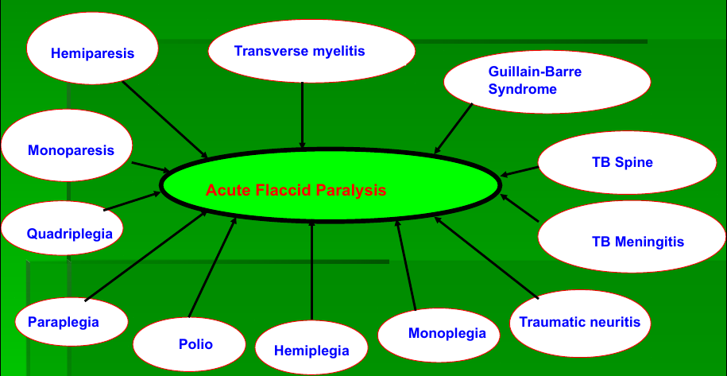

Target disease surveillance
At the moment there are surveillances for acute flaccid paresis, measles and neonatal tetanus. If any case is suspected, immediately call the A and E surveillance team (see below) and notify them about the case. All samples collected should be handled in A and E by the team responsible. If uncertain on a case get in touch with any of the surveillance team members.
Contact persons
At QECH (Focal point person)
Chikondi Phiri (A and E)
Daniel Mumba (A and E)
Henderson Masanjala (A and E)
Eunice Mkandawire (PSCW) and
George Macheso (A and E)
At DHO Blantyre
Jean Kachara, EPI Coordinator
Acute flaccid paresis (AFP) surveillance
For management of flaccid paralysis see Paralysis
Objective
To strengthen AFP Surveillance in Malawi and thereby contribute to the goal of interrupting wild poliovirus transmission.
Case definition
Professional Case Definition
Any case of acute paralysis including guillain-barre syndrome (GBS), in a child less than 15 years of age for which no other cause is apparent, or a patient of any age diagnosed as polio by a medical officer.
Lay Case Definition
Sudden weakness or paralysis in the leg (s) and/ or arm (s), not caused by injury in a child less than 15 years of age.

Case Detection, Notification And Investigation
Notify the surveillance focal person/EPI Coordinator and make sure case is reported
For each case found:
- Fill out case investigation form.
Note detailed directions to relocate patient for follow examination and advise parents of need for follow-up. Please write physical address: eg
-Chikumbeni Village, TA Chikowi;
-Matawale township, near Likangala river
- Initiate collection of stool specimens
- Collect 2 stool specimens 24-48 hours apart, ≤14 days of onset of paralysis.
- Quantity: 8-10 grams (±2 fingers or 1 tea spoon)
- Use any clean plastic bottle
- Store the specimen in a freezing condition.
- Arrange transport. Send stool specimens in reverse cold chain within 3 days. Use a vaccine carrier with frozen ice packs.
Avoid and report any break in the reverse cold chain. Inform EPI Unit about the transportation of AFP specimens.
- Photocopy a case note for each AFP case
Measles surveillance
Objective
To strengthen Measles Surveillance in Malawi towards measles elimination
Case Definition
Professional Case Definition
History of generalized blotchy rash and fever, and history of any one of the following: cough, runny nose, and/ or red eyes.
Lay Case Definition
History of rash and fever, and any one of the following: cough, runny nose, and/ or red eyes.
Case Detection, Notification And Investigation
- Notify the surveillance focal person/EPI Coordinator and make sure case is reported
- Collect blood sample for serologic confirmation upon first contact
(in the first 30 days of the onset of rash)
- Take 2-3 ml of venous blood into a screw-capped labeled test tube
- Isolate the serum from the cells -> Let blood sit at an angle for at least 1 hour without shaking. If a refrigerator is available, refrigerate over-night. If a centrifuge is available, centrifuge at 2000 rpm for 10-20 minutesh. Decant the serum into a clean labeled test-tube
- Complete case investigation form; send form and specimen to the National level
- Transportation: Keep the serum specimen in a vaccine carrier at 4 - 8°C to prevent bacterial over-growth. The specimen should preferably arrive at the lab within 3 days of collection.
Neonatal tetanus surveillance
For management of Tetanus see Tetanus
Objective
To strengthen NNT Surveillance in Malawi and thereby contribute to the goal of NNT elimination
Case definition
Suspected Case
Any neonatal death between 3 to 28 days of age in which the cause of death is unknown; or any neonatal death reported as having suffered from neonatal tetanus (NNT) between 3 to 28 days of age and not investigated. Specifically any neonate with a normal ability to suck and cry during the first 2 days of life, and who between 3 and 28 days of life cannot suck normally and becomes stiff or has convulsions or both.
Case Detection, Notification And Investigation
- Notify the surveillance focal person/EPI Coordinator and make sure case is reported
- Fill the NNT case investigation form for each case. Send the filled form to the district and he/she will send the form to the regional office where it will be transmitted to EPI Unit.
{kind=link}